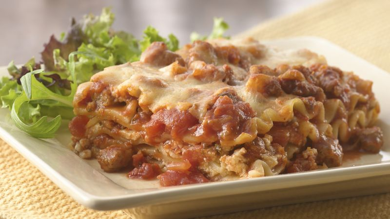

Odin Recipes
Lasagna

Ingredients
- 1 lb bulk Italian pork sausage
- 1 medium onion, chopped (1/2 cup)
- 1 clove garlic, crushed
- 3 tablespoons chopped fresh parsley
- 1 tablespoon chopped fresh basil leaves or 1 teaspoon dried basil leaves
- 1 teaspoon sugar
- 2 cups Muir Glen™ organic diced tomatoes (from 28-oz can), undrained
- 1 can (15 oz) Muir Glen™ organic tomato sauce
- 12 uncooked lasagna noodles (12 oz)
- 1 container (15 oz) ricotta cheese or small-curd cottage cheese (2 cups)
- 1/4 cup grated Parmesan cheese
- 1 tablespoon chopped fresh oregano leaves or 1 1/2 teaspoons dried oregano leaves
- 2 cups shredded mozzarella cheese (8 oz)
- 1/4 cup grated Parmesan cheese
Steps
- In 10-inch skillet, cook sausage, onion and garlic over medium heat, stirring occasionally, until sausage is no longer pink; drain.
- Stir in 2 tablespoons of the parsley, the basil, sugar, tomatoes and tomato sauce. Heat to boiling, stirring occasionally. Reduce heat to low; simmer uncovered about 45 minutes or until slightly thickened.
- Heat oven to 350°F. Cook and drain noodles as directed on package.
- In medium bowl, mix ricotta cheese, 1/4 cup Parmesan cheese, remaining 1 tablespoon parsley and the oregano.
- Spread 1 cup of the sauce mixture in ungreased 13x9-inch (3-quart) glass baking dish. Top with 4 noodles. Spread 1 cup of the cheese mixture over noodles; spread with 1 cup of the sauce mixture. Sprinkle with 2/3 cup of the mozzarella cheese. Repeat with 4 noodles, the remaining cheese mixture, 1 cup of the sauce mixture and 2/3 cup of the mozzarella cheese. Top with remaining noodles and sauce mixture. Sprinkle with remaining mozzarella cheese and 1/4 cup Parmesan cheese.
- Cover; bake 30 minutes. Uncover; bake about 15 minutes longer or until hot and bubbly. Let stand 15 minutes before cutting.